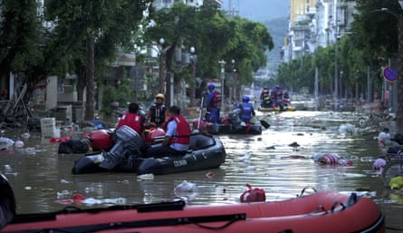

A sharp cold spell affecting the southern half of South America is expected to intensify and push northwards in the coming days as a broad area of high pressure builds over the continent.
Over the weekend, large parts of Chile, Argentina and Uruguay had temperatures 10-15C below their seasonal averages. Night-time lows plunged well into the negative double digits. One weather station in Chile – located 69 metres above sea level at an airport near the city of Puerto Natales – recorded a minimum of -15.7C on Sunday evening, nearly 14C below the average June minimum.
Although subzero temperatures are not uncommon in Chile in early winter, the severity of this cold spell prompted the Chilean Meteorological Directorate to issue warnings late last week highlighting the risk of severe frosts.
While the south contended with frigid conditions, a storm system farther north brought torrential rainfall to the far south-east of Bolivia and southern Brazil over the weekend. A weather station in the Brazilian state of Rio Grande do Sul reported 92mm in just 24 hours on Sunday. This came a week after the same state was hit by devastating floods, which killed three people and forced the evacuation of at least 6,000 people as rivers overflowed.
The storm system, which is now clearing into the southern Atlantic, has made way for the high pressure to expand northwards. This is expected to extend the cold air into more central regions of the continent, including Paraguay, Bolivia and south-eastern parts of Peru. In these areas, daytime highs in places that typically reach up to 30C may struggle to exceed the mid-teens.
In China, relentless rainfall over the last two weeks has led to destructive floods across parts of the south-east. In the provinces of Guizhou and Guangxi, two separate heavy rainfall events last week, both intensified by the east Asian monsoon, triggered historic floods as rivers overflowed. One of three rivers that converge near the city of Rongjiang rose 2 metres above its safety threshold early last week after rainfall totals of twice the June average fell in just 72 hours. Later in the week, further downpours pushed the river 4 metres above the limit. Much of the city became submerged, resulting in six deaths and 300,000 evacuations. Regional meteorologists described it as a one-in-50-year event.
Rescuers evacuate residents in Rongjiang county after flooding in China’s Guizhou province.Photograph: Xinhua/Shutterstock
Farther south, a tropical depression that originated from the South China Sea made landfall on the island of Hainan on Thursday before its remnants moved north-east into the mainland. The rainfall associated with the system brought further disruption to densely populated areas already struggling to recover from the recent Typhoon Wutip.
Scientists have said rising global temperatures and the resulting increase in atmospheric moisture have led to an increase in the intensity, frequency and unpredictability of extreme rainfall events in China in recent years.